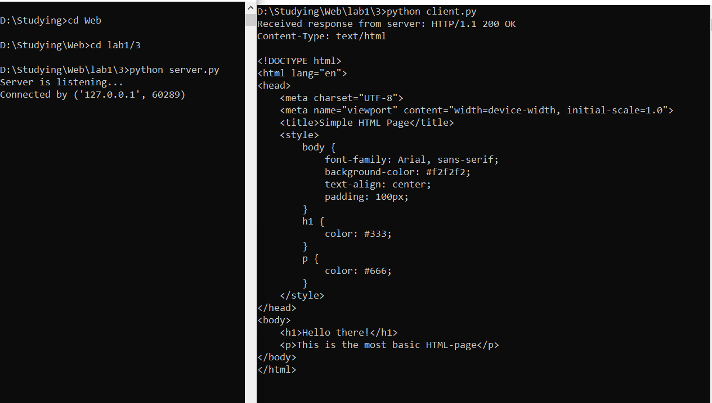

Задание: реализовать серверную часть приложения. Клиент подключается к серверу. В ответ клиент получает http-сообщение, содержащее html-страницу, которую сервер подгружает из файла index.html.
В рамках данного задания для проверки работоспособности была также реализована клиентская сторона.
Листинг кода сервера:
import socket
from config import HOST, SERVER_PORT
def handle_client(client_socket):
# про формат http-сообщений: https://selectel.ru/blog/http-request/
http_response = """HTTP/1.1 200 OK
Content-Type: text/html
{}
""".format(html_content)
client_socket.sendall(http_response.encode())
client_socket.close()
if __name__ == '__main__':
with open('index.html', 'r') as html_file:
html_content = html_file.read()
server_address = (HOST, SERVER_PORT)
with socket.socket(socket.AF_INET, socket.SOCK_STREAM) as conn:
conn.bind(server_address)
conn.listen(10)
print('Server is listening...')
while True:
client_conn, addr = conn.accept()
print(f"Connected by {addr}")
handle_client(client_conn)
Листинг кода клиента:
import socket
from config import HOST, SERVER_PORT, BUFF_SIZE
if __name__ == '__main__':
server_address = (HOST, SERVER_PORT)
conn = socket.socket(socket.AF_INET, socket.SOCK_STREAM)
try:
conn.connect(server_address)
response = conn.recv(BUFF_SIZE)
print(f'Received response from server: {response.decode("utf-8")}')
except ConnectionRefusedError:
print("Server not avaliable, try again later")
conn.close()
Листинг содержимого index.html:
<!DOCTYPE html>
<html lang="en">
<head>
<meta charset="UTF-8">
<meta name="viewport" content="width=device-width, initial-scale=1.0">
<title>Simple HTML Page</title>
<style>
body {
font-family: Arial, sans-serif;
background-color: #f2f2f2;
text-align: center;
padding: 100px;
}
h1 {
color: #333;
}
p {
color: #666;
}
</style>
</head>
<body>
<h1>Hello there!</h1>
<p>This is the most basic HTML-page</p>
</body>
</html>
Скринкаст:
Клиент-серверное взаимодействие:

index.html: